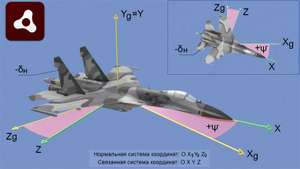

Avionics tools (University projects)

Project 1:
Tools: Adobe Air, 3ds Max
Screenshots:


More about it on my blog: Adobe Air – Desktop apps with ActionScript
Project 2:
Tools: Unity, Blender, Mission Planner
Screenshots:

More about it on my blog: Flight Log Viewer – Unity app
Comments